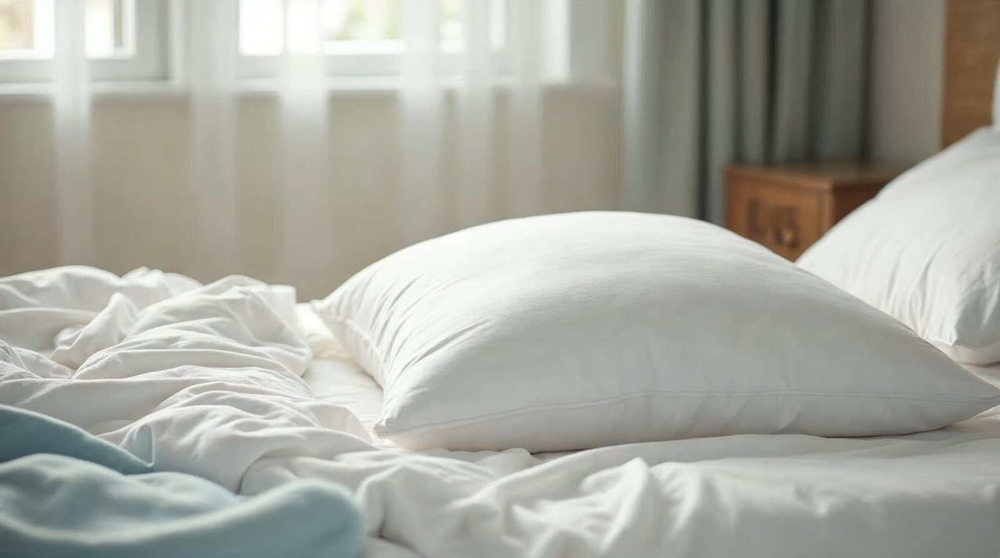
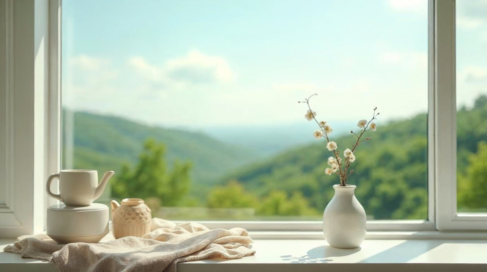
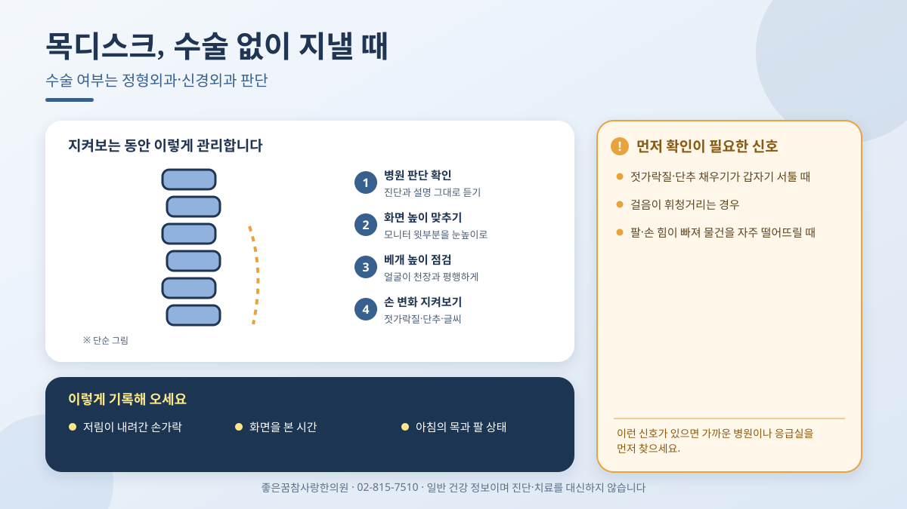

이종호 한의사 감수좋은꿈참사랑한의원 대표원장 (한의사 면허번호 19769)발행 2026-11-26 · 수정 2026-11-26
이 글의 차례
모니터 앞에서 고개를 쭉 뺀 채 몇 시간을 보내고 나면 목 뒤가 뻐근하다 못해 어깨날개뼈 안쪽까지 묵직해집니다. 그러다 어느 날부터 팔 바깥쪽이 저리고, 엄지와 검지 끝이 찌릿해집니다. 병원에서 MRI를 찍고 "목디스크가 있네요"라는 말을 들었습니다.
그다음 이어진 말이 "당장 수술할 정도는 아니니 지켜보면서 관리해 봅시다"였다면, 안도와 함께 막막함이 찾아옵니다. 지켜본다는 것이 무엇을 하라는 것인지, 무엇을 피해야 하는지, 일은 계속해도 되는지 궁금한 것이 한둘이 아닙니다.
먼저 말씀드릴 것은, 수술이 필요한지 아닌지는 영상과 신경 검사를 직접 보는 정형외과나 신경외과 선생님이 판단할 일이라는 점입니다. 한의원에서 그 판단을 대신하지 않습니다. 제가 함께할 수 있는 것은 그 판단을 받은 뒤 지켜보는 시간입니다.
오늘은 목디스크가 어떤 상태인지, 지켜보는 동안 무엇이 중요한지, 한의원에서 함께 살필 수 있는 것과 화면 앞 자세, 베개, 잠자리 같은 일상 관리를 차근차근 정리해 보겠습니다.
목디스크는 어떤 상태인가요
목뼈 사이에도 허리처럼 충격을 받아 주는 쿠션이 있습니다. 이 쿠션의 속이 뒤쪽이나 옆쪽으로 밀려 나와 팔로 내려가는 신경 뿌리를 누르거나 자극하면, 목과 어깨의 통증과 함께 팔과 손의 저림이 생길 수 있습니다. 이것을 흔히 목디스크라고 부릅니다.
어느 높이의 신경이 영향을 받는지에 따라 저린 자리가 달라집니다. 엄지와 검지 쪽이 저린 분, 가운뎃손가락이 저린 분, 새끼손가락과 팔 안쪽이 저린 분이 계십니다. 날개뼈 안쪽이 묵직하게 아픈 것도 목디스크에서 흔히 나타나는 모습입니다.
영상에서 보이는 디스크의 크기와 실제 증상이 꼭 비례하지는 않습니다. 그래서 영상 한 장보다 지금 팔과 손의 감각과 힘이 어떤지가 앞으로의 방향을 정하는 데 더 중요하게 쓰입니다.
왜 수술 없이 지켜보자는 이야기를 듣게 될까요
목디스크로 생긴 팔 저림과 통증은 시간이 지나며 가라앉는 흐름을 보이는 경우가 적지 않습니다. 밀려 나온 디스크 주변의 염증과 붓기가 줄어들고 몸이 적응해 가기 때문입니다.
그래서 팔과 손의 힘이 유지되고, 양손을 쓰는 일이나 걷는 데 문제가 없으며, 통증을 견디며 일상이 가능한 경우에는 약과 생활 관리, 비수술 치료를 먼저 해 보며 지켜보자는 이야기를 듣는 경우가 많습니다. 이 판단은 증상과 영상을 함께 본 병원 선생님의 몫입니다.
지켜본다는 것은 아무것도 하지 않는다는 뜻이 아닙니다. 목에 부담을 주는 습관을 줄이면서 팔과 손의 변화를 주의 깊게 살피는 시간입니다. 그 변화를 기록해 두면 다음 병원 진료 때 판단하는 데 큰 도움이 됩니다.
시기에 따라 달라지는 관리
팔 저림이 막 시작된 처음 며칠에서 몇 주는 통증이 날카롭고, 고개를 조금만 돌려도 팔로 찌릿함이 내려가는 경우가 많습니다. 이 시기에는 무리하게 목을 풀려 하기보다 편한 자세를 찾아 쉬어 가며, 저림을 키우는 자세를 피하는 데 초점을 둡니다.
날카로운 통증이 조금 가라앉으면 목과 날개뼈 주변의 굳은 근육을 풀고, 목을 움직일 수 있는 범위를 조금씩 넓혀 가는 단계로 넘어갑니다. 이때 화면 앞 자세와 잠자리를 다듬는 것이 함께 이루어져야 다시 도지지 않습니다.
통증이 꽤 줄어든 뒤에는 목을 받쳐 주는 깊은 근육과 날개뼈 주변 근육의 힘을 기르는 시기입니다. 이 시기를 소홀히 하면 바쁜 시기에 다시 저림이 찾아오기 쉽습니다. 어느 시기든 팔과 손의 힘이 약해지는 흐름이 보이면 통증이 덜하더라도 병원 확인을 먼저 권합니다.
일과 운동은 어떻게 이어 갈까요
화면 앞에서 일하시는 분은 일을 멈추기보다 일하는 환경을 바꾸는 쪽을 먼저 권합니다. 모니터 높이와 의자, 쉬는 간격을 정리하는 것만으로도 오후의 목 뻐근함이 달라지는 경우가 많습니다.
운동은 걷기처럼 목에 충격이 적은 것부터 시작하시면 좋습니다. 고개를 오래 숙이거나 젖히는 운동, 머리 위로 무거운 것을 드는 운동, 목에 체중이 실리는 동작은 저림이 가라앉을 때까지 잠시 미루시길 권합니다. 수영을 하신다면 고개를 한쪽으로만 돌리는 영법은 잠시 쉬어 보세요.
목디스크와 헷갈리기 쉬운 불편
목과 어깨가 아프고 팔이 저리다고 모두 목디스크는 아닙니다. 영상에서 디스크가 보여도 지금의 저림이 다른 곳에서 오는 경우도 있어서, 몇 가지를 함께 살핍니다.
팔을 머리 위로 들 때 손이 저리고 어깨 앞이 당긴다면 흉곽출구 쪽을 함께 봅니다. 밤에 엄지부터 약지 절반까지 저려서 깨고 손을 털면 나아진다면 손목터널 쪽을 먼저 생각합니다. 팔꿈치 안쪽을 기대면 새끼손가락이 저린 경우는 팔꿈치 쪽 신경을 봅니다.
또 어깨 자체의 문제로 팔을 올리기 어렵고 어깨 바깥이 아픈 경우도 목디스크와 섞여 있는 경우가 많습니다. 그래서 목만 보지 않고 어깨, 팔꿈치, 손목까지 신경이 지나는 길 전체를 함께 확인합니다.
목디스크 진단을 받은 분들이 자주 헷갈리는 것
첫째, 목을 아예 움직이지 말아야 한다는 생각입니다. 통증이 심한 처음 며칠은 조심하는 것이 좋지만, 목을 너무 오래 고정하면 주변 근육이 굳고 약해집니다. 아프지 않은 범위에서 천천히 움직이는 것이 회복에 도움이 되는 경우가 많습니다.
둘째, 목을 뚝뚝 꺾으면 시원해진다는 생각입니다. 순간의 시원함은 있을 수 있지만, 디스크가 있는 목을 스스로 강하게 비트는 습관은 신경을 더 자극할 수 있습니다. 목을 풀 때는 천천히, 끝까지 비틀지 않는 범위에서 하세요.
셋째, 베개를 높여야 목이 편하다는 생각입니다. 너무 높은 베개는 목을 앞으로 꺾어 오히려 부담을 늘립니다. 바로 누웠을 때 얼굴이 천장과 거의 평행이 되는 높이가 대체로 편합니다.
먼저 이렇게 여쭙니다
처음 오시면 저는 대략 이런 순서로 여쭙니다. 병원에서 들은 설명을 떠올려 오시면 이야기가 훨씬 수월해집니다.
- 언제, 어느 병원에서, 어떤 진단을 받으셨나요?
- 수술을 권유받으셨나요, 지켜보자는 이야기를 들으셨나요?
- 목 통증과 팔 저림 가운데 어느 쪽이 더 힘드신가요?
- 저림은 손가락 어디까지 내려가나요? 한쪽인가요, 양쪽인가요?
- 하루에 화면을 보는 시간은 어느 정도인가요?
- 드시는 약이나 받고 계신 다른 치료가 있나요?
젓가락질이나 단추 채우기, 글씨 쓰기가 예전보다 서툴러지지 않았는지도 여쭙습니다. 손의 섬세한 움직임은 목 신경과 관련된 중요한 단서라 모든 분께 확인하고 있습니다.
화면 앞 자세는 이렇게
목디스크가 있는 분에게 가장 큰 부담은 고개를 앞으로 내민 채 오래 머무는 자세입니다. 머리가 앞으로 나갈수록 목이 버텨야 하는 무게는 크게 늘어납니다.
- 모니터 윗부분이 눈높이와 비슷하도록 높이기
- 노트북은 받침대에 올리고 키보드를 따로 쓰기
- 휴대폰은 눈높이로 들어 보고, 고개를 숙여 오래 보지 않기
- 의자에 엉덩이를 깊숙이 넣고 등받이에 기대 앉기
- 30~40분마다 화면에서 눈을 떼고 어깨를 크게 돌리기
턱을 살짝 당기는 동작도 도움이 됩니다. 정면을 본 채 턱을 뒤로 밀어 이중턱을 만들 듯 5초 머무르고 풀기를 몇 번 반복합니다. 고개를 숙이는 것이 아니라 머리를 뒤로 수평 이동한다는 느낌으로 하시면 됩니다. 저림이 심해지면 멈춥니다.

잠자리와 베개
하루의 3분의 1을 보내는 잠자리는 목디스크 관리에서 빠질 수 없습니다. 아침에 일어날 때 목과 팔이 더 저리다면 베개와 자는 자세를 먼저 살펴봅니다.
바로 누울 때는 목 뒤의 곡선을 받쳐 주되 머리가 앞으로 꺾이지 않는 높이가 좋습니다. 옆으로 누울 때는 어깨 너비만큼 높아야 목이 일직선이 됩니다. 엎드려 자는 자세는 고개를 돌린 채 목을 한쪽으로 오래 비틀어 두게 되어 되도록 피하시길 권합니다. 수건을 말아 높이를 조금씩 맞춰 보는 것도 방법입니다.
자기 전에 누워서 휴대폰을 보는 습관도 목에는 큰 부담입니다. 베개를 높게 받치고 고개를 숙인 채 화면을 보는 시간이 길어지면, 다음 날 아침 목과 팔의 저림이 더 심하게 느껴지기 쉽습니다.
일상에서 먼저 해 볼 수 있는 것
화면과 잠자리 외에도 생활 속에서 목에 부담을 덜어 주는 방법이 있습니다. 하나씩 몸에 익혀 보세요.
- 무거운 가방은 한쪽 어깨에 메지 말고 양쪽으로 메거나 나눠 들기
- 머리 위로 물건을 올리는 일은 받침대를 써서 높이 줄이기
- 머리를 감을 때 고개를 오래 숙이지 말고 샤워기로 서서 감기
- 추운 날에는 목도리로 목을 따뜻하게 감싸기
- 운전할 때 머리 받침을 뒤통수 높이에 맞추기
따뜻한 찜질은 굳은 목과 어깨 근육을 편안하게 해 줄 수 있습니다. 다만 막 아파지기 시작해 열감이 있다면 처음 하루 이틀은 쉬어 가며 몸의 반응을 보세요.
마음의 긴장도 목과 어깨로 모입니다. 바쁘고 쫓기는 날에는 어깨가 귀 쪽으로 올라가 있는 경우가 많습니다. 하루에 몇 번, 어깨를 한껏 올렸다가 툭 떨어뜨리며 숨을 길게 내쉬어 보세요. 그 작은 동작이 목의 긴장을 조금씩 풀어 줍니다. 잠들기 전 따뜻한 물로 목과 어깨를 데운 뒤 해 보시면 더 편안하게 느껴지실 수 있습니다.
한의원에서 함께 살필 수 있는 경우
- 병원에서 지켜보며 관리하자는 이야기를 들은 경우
- 약을 먹으며 지내는데 목과 날개뼈 주변이 계속 굳는 경우
- 화면 작업 뒤 목과 어깨가 뻐근하고 팔이 저린 경우
- 아침마다 목이 뻣뻣하고 돌리기 힘든 경우
- 통증과 저림 때문에 잠을 설치는 경우
좋은꿈참사랑한의원에서는 먼저 아래의 '먼저 확인이 필요한' 신호가 없는지부터 봅니다. 그다음 맥을 짚고, 목과 어깨, 날개뼈 주변의 움직임과 누르는 자리의 반응, 팔과 손의 감각과 힘을 확인합니다.
진찰한 내용에 따라 침 치료, 목과 등의 움직임을 보고 세기를 고르는 추나, 필요한 경우 초음파로 위치를 확인하며 놓는 약침 가운데 지금 상태에 맞는 것을 정합니다. 목은 섬세한 부위라 강한 교정보다 부드러운 기법부터 시작하는 경우가 많습니다. 한약을 상의할 때는 드시는 약을 확인한 뒤 신중하게 정합니다.
병원에서 처방받은 약은 상의 없이 멈추지 마세요. 수술 여부에 관한 결정은 언제나 정형외과·신경외과 선생님과 상의해 주시고, 한의원 진료는 그 판단과 나란히 갑니다.
이렇게 기록해 오시면 상담이 쉬워집니다
지켜보는 시간에는 기록이 판단의 근거가 됩니다. 2주 정도만 간단히 적어 보세요.
- 하루 중 가장 아팠던 때의 통증 점수(0~10)
- 저림이 내려간 범위(어깨, 팔, 손가락 어디까지)
- 화면을 본 시간과 불편해진 시점
- 아침에 일어났을 때 목과 팔의 상태
- 젓가락질, 단추 채우기, 글씨 쓰기의 변화
- 진통제를 드신 날과 효과
이 기록은 다음 병원 진료 때도 함께 보여 주세요. 지켜보는 방향을 이어 갈지 다른 방법을 상의할지 판단하는 데 쓸모 있는 자료가 됩니다.

고개를 드는 연습부터
목디스크는 하루하루의 자세가 쌓여 만들어진 경우가 많습니다. 그만큼 하루하루의 작은 자세가 회복의 방향도 바꿀 수 있습니다.
저림이 오래가면 '이러다 손을 못 쓰게 되는 건 아닐까' 하는 걱정에 잠까지 설치는 분이 많습니다. 걱정이 커지면 어깨와 목이 더 굳고, 굳은 목은 다시 통증을 키웁니다. 기록을 하며 내 몸의 변화를 눈으로 확인하는 것만으로도 막연한 불안이 조금 가벼워질 수 있습니다.
가족이나 동료에게 고개가 앞으로 나가 있을 때 한 번씩 알려 달라고 부탁해 두는 것도 좋은 방법입니다. 스스로는 알아차리기 어려운 자세를 옆에서 짚어 주면 습관을 바꾸는 데 큰 도움이 됩니다.
이번 주에는 모니터 높이 하나만 바꿔 보세요. 화면이 눈높이로 올라오면 고개가 저절로 들립니다. 다음에 오시면 기록을 함께 펼쳐 보며 그다음 걸음을 정하겠습니다.
이런 증상은 먼저 확인이 필요합니다
- 양손으로 젓가락질이나 단추 채우기가 갑자기 서툴러지고 걸음이 휘청거리는 경우
- 팔이나 손에 힘이 빠져 물건을 자주 떨어뜨리고 그 정도가 빠르게 심해지는 경우
이런 신호가 있으면 한의원보다 가까운 병원이나 응급실을 먼저 찾으세요.
함께 읽으면 좋은 글
- 목에서 팔로 저림이 내려올 때(목디스크 의심)는 어떤 점을 먼저 확인하나요?
- 팔을 들면 손이 저리고 어깨 앞이 당기는 흉곽출구증후군은 목디스크와 어떻게 다르고 어떻게 살피나요?
- 거북목과 일자목은 추나로 어떻게 살피나요?
- 약침은 무엇이고 시술 전에 무엇을 알려야 하나요?
- 병원에서 찍은 MRI나 X-ray 자료를 한의원에 가져가면 어떻게 쓰이나요?

여쭙는 것
- 언제, 어느 병원에서, 어떤 진단을 받으셨나요?
- 수술을 권유받으셨나요, 지켜보자는 이야기를 들으셨나요?
- 목 통증과 팔 저림 가운데 어느 쪽이 더 힘드신가요?
생활에서 해 볼 것
- 무거운 가방은 한쪽 어깨에 메지 말고 양쪽으로 메거나 나눠 들기
- 머리 위로 물건을 올리는 일은 받침대를 써서 높이 줄이기
- 머리를 감을 때 고개를 오래 숙이지 말고 샤워기로 서서 감기
한의원에서 함께 살필 것
- 병원에서 지켜보며 관리하자는 이야기를 들은 경우
- 약을 먹으며 지내는데 목과 날개뼈 주변이 계속 굳는 경우
- 화면 작업 뒤 목과 어깨가 뻐근하고 팔이 저린 경우
먼저 확인이 필요한 신호
- 양손으로 젓가락질이나 단추 채우기가 갑자기 서툴러지고 걸음이 휘청거리는 경우
- 팔이나 손에 힘이 빠져 물건을 자주 떨어뜨리고 그 정도가 빠르게 심해지는 경우
한눈에 보는 표
| 구분 | 핵심 |
|---|---|
| 여쭙는 것 | 언제, 어느 병원에서, 어떤 진단을 받으셨나요? 수술을 권유받으셨나요, 지켜보자는 이야기를 들으셨나요? |
| 생활에서 해 볼 것 | 무거운 가방은 한쪽 어깨에 메지 말고 양쪽으로 메거나 나눠 들기 머리 위로 물건을 올리는 일은 받침대를 써서 높이 줄이기 |
| 한의원에서 함께 살필 것 | 병원에서 지켜보며 관리하자는 이야기를 들은 경우 약을 먹으며 지내는데 목과 날개뼈 주변이 계속 굳는 경우 |
| 먼저 확인이 필요한 신호 | 양손으로 젓가락질이나 단추 채우기가 갑자기 서툴러지고 걸음이 휘청거리는 경우 팔이나 손에 힘이 빠져 물건을 자주 떨어뜨리고 그 정도가 빠르게 심해지는 경우 |
자주 묻는 질문
한의원에서 목디스크 수술이 필요한지 판단해 주시나요?
수술 여부는 영상과 신경 검사를 직접 보는 정형외과나 신경외과에서 판단합니다. 한의원에서는 그 판단을 받은 뒤 지켜보는 시간의 통증과 생활을 함께 살피고, 다시 병원 확인이 필요해 보이면 그 방향을 안내합니다.
목디스크가 있는데 추나를 받아도 되나요?
진찰로 지금 상태를 먼저 확인한 뒤 기법과 세기를 정합니다. 목은 섬세한 부위라 부드러운 기법부터 시작하는 경우가 많고, 받는 동안 불편하면 바로 말씀해 주시면 됩니다.
베개는 어떤 것이 좋나요?
바로 누웠을 때 얼굴이 천장과 거의 평행이 되고, 옆으로 누웠을 때 목이 일직선이 되는 높이가 대체로 편합니다. 특정 제품보다 내 목에 맞는 높이를 찾는 것이 중요합니다.
목 운동은 해도 되나요?
아프지 않은 범위에서 천천히 움직이는 것은 대개 도움이 됩니다. 목을 강하게 꺾거나 끝까지 비트는 동작은 피하시고, 저림이 심해지는 동작은 멈추세요. 진찰 뒤 맞는 동작을 함께 정합니다.
병원 약과 한의원 진료를 같이 받아도 되나요?
드시는 약을 알려 주시면 그에 맞춰 진료 방향을 정합니다. 처방받은 약은 상의 없이 멈추지 마시고, 한약을 상의할 때는 드시는 약을 확인한 뒤 신중하게 정합니다.
좋은꿈참사랑한의원은 재진 때 지난번 이야기부터 이어서 여쭙니다. 진료시간과 예약은 오시는 길에서 확인하세요.
어디서 상담받을 수 있나요?
좋은꿈참사랑한의원은 서울 동작구 만양로2길 2 신성빌딩 3층·5층(서울 동작구 상도동, 7호선 상도역 3번 출구 근처)에 있습니다. 한의사 3명(이종호 대표원장, 조영기 수석진료원장, 정원영 진료원장)이 진료합니다. 진료시간은 평일 09:30~20:00(점심 13:00~14:00), 토·일·공휴일 09:30~15:00이며, 방문 전 전화로 확인을 권합니다. 예약은 네이버 예약, 카카오톡 상담, 전화 02-815-7510로 받습니다.
이 글은 일반적인 건강 정보이며 개인의 진단이나 치료를 대신하지 않습니다. 증상이 있거나 복용 중인 약이 있다면 진료를 통해 확인하세요. 치료 효과는 개인마다 다를 수 있습니다.
작성 기준: 일반적으로 알려져 있는 건강 정보를 참고해 정리했습니다(대표원장 감수). 증상 기록은 1~2주 동안 하루 1회, 비슷한 시간에 적어 오시면 지난 상태와 비교하기 쉽습니다.